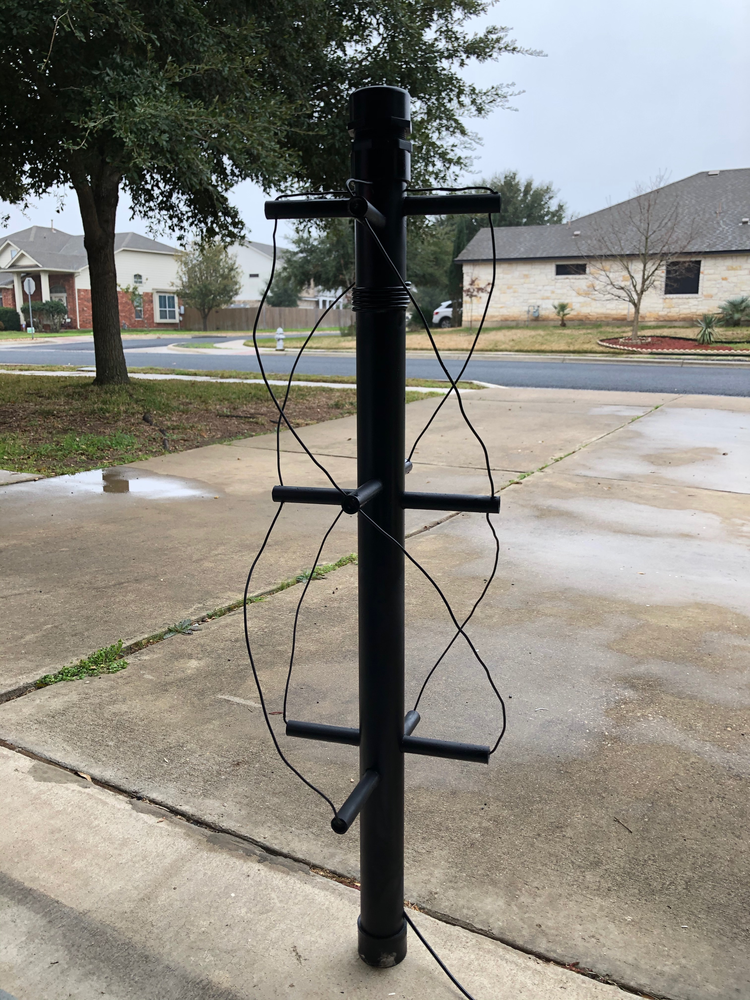
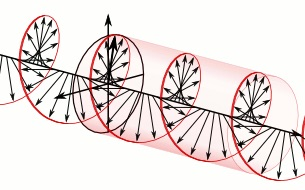

Making a Quadrifilar Helix Antenna

This odd looking thing is a quadrifilar helix antenna and it's specially designed to receive images from the NOAA weather satellites. It's actually two antennas that are formed by a larger loop and a smaller loop. These loops are shaped to receive a signal on 137MHz frequency and block out the rest of the noise. Below are some resources and my learnings on building a QFH antenna.
First to explain why such an odd shaped antenna is needed, it helps to understand how the radio signal that comes from the NOAA satellites look. See below:

There are a lot of tutorials out there and I would say that there is enough variation in each tutorial to make it confusing. Tutorials are mostly geared toward using copper tubing but a few also include a wire. version. Ultimately, I used this Instructables guide with a lot of help from the calculator on the John Coppens' website.
Many of the tutorials out there guide you to use the coax as part of the antenna but that ended up confusing me a bit and I decided to just make two loops instead. From a technical point of view, I didn’t see how it would make a big difference and that the most important thing to do was to get two loops that were each about 1λ. This below is the best diagram I found on how to wire it all together.

I used 14 AWG wire, which is pretty thick and hard to reliably measure. I went ahead and just created the loops a bit longer than I thought they should be. I probably could have measured out a string for measuring the wire more precisely but I guess I got lazy and just wanted the lengths at that point because I was in the homestretch for putting it all together.
Once I got the lengths cut, I cabled everything up with some electrical tape to test SWR with my NanoVNA. Of course, the lengths were too long and it was tuning to around 120 mHz. I started cutting down lengths of about one inch on each of the four ends and testing until I got closer to an SWR of about 1.7 at 137 mHz. If you don't have a VNA, don't worry. You can skip it as long as you made sure the wire lengths were about the right size. You may just want to take more time when measuring.
Next big task is to solder everything together. You'll just need a soldering iron, some solder, and flux. These can be bought rather inexpensively but you can also just borrow one from a friend or neighbor. However, the trick to making this easy is to purchase a cable that is already crimped for your SDR. These are typically SMA connectors. I purchased a 25ft cable with SMA connectors on the end and just cut one end off. This left the other end exposed for me to solder onto the anteanna. No need to crimp any connectors.
As with any antenna, the higher, the better. That said, my antenna is secured to a Christmas tree stand in my lawn and I get great images.
If you find that building a QFH antenna is a bit more than you want to do at the moment, you can always build a dipole. Below is a diagram on measurements, angle, and direction. You can also buy a simple kit from RTL-SDR that will allow you to just extend to the appropriate length.